The go or no go dialog you open before a run. It walks through a set of grouped checks; each shows green
when satisfied, amber/red when it needs attention. When the checklist is clear, you arm.
Open this dialog by selecting Start eclipse imaging for a live run or
Eclipse plan rehearsal... for a rehearsal. The atmospheric-refraction choice is part of
the saved plan. Preflight shows its current value as read-only text; change it in
Plan preferences, not here.
The dialog is titled for the event and site (for example, Eclipse imaging August 12, 2026:
<your coordinates>). A banner at the top tells you the next item standing between you and a clean start.
When all is well, it ends with "Checklist is clear, ready to start eclipse imaging."
Do not tune SharpCap after opening preflight
From this point, the saved plan is the source of truth. HelioMaker applies the plan's sequence controlled
SharpCap settings, verifies them while preflight remains open, and applies them again when the run is armed or
SharpCap reconnects. A manual change in SharpCap can therefore fail a readiness check and will be replaced by
the plan.
If any exposure, gain, capture format, colour space, binning, capture area or other
sequence parameter needs to change, cancel preflight and update it in
Plan preferences or the Phase editor. Save the
revised plan, repeat any affected camera test, and rehearse it again before starting the eclipse run. Do not
tune the sequence at the last minute in SharpCap.
Work top to bottom, on the day and in rehearsal
Run this checklist in your rehearsals too, not just for real. The first time you see
a red badge should not be on eclipse morning. Most gates offer a button that fixes them in place (start tracking,
run autofocus, sync the clock, choose a folder).
Verify the run summary
The top of the dialog identifies the event, imaging mode, selected camera, physical setup, approximate shot
count, number of phases and capture span. Check this summary before working through the gates. The camera shown
here must agree with both the saved plan and the camera currently open in SharpCap. Any disagreement is a hard
blocker: choose the planned camera or deliberately update and reapprove the plan before arming.
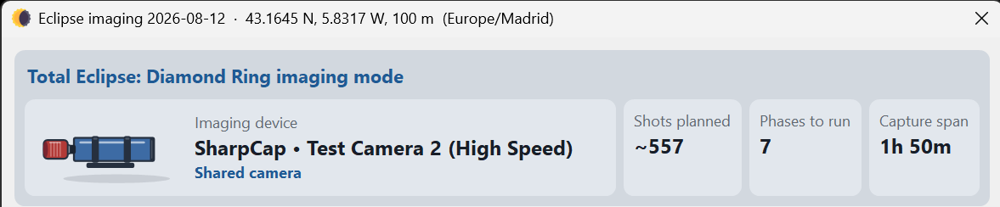
Before checking individual gates, verify the event summary, imaging mode, selected camera, physical
setup and plan size at the top of the dialog.
A different SharpCap camera cannot be ignored
HelioMaker pins the imaging camera when the plan is saved and again when the run is armed. The preflight camera
identity check is not an ordinary warning and Ignore warnings and start cannot pass it.
This prevents a valid set of capture settings from being applied to—and capturing through—the wrong device.
The gates
Plan version
Plan version
Are you about to run the intended plan? If a draft exists beside the final plan, changes made since the
final plan was saved exist only in the draft. The gate asks you to choose Use draft plan
or Run the final plan. See Draft vs final.
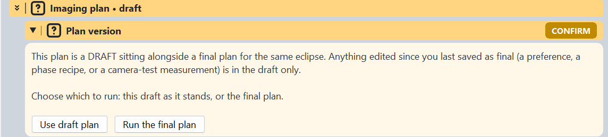
When both versions exist, make a deliberate choice between the current draft and the last final
plan before arming the run.
Time and Location
Time and Location
Shows the selected observer, time zone, local time and the measured difference between the system clock
and network UTC. Confirm that the observer location, time zone and displayed clock are correct. When online,
the badge checks the clock against the NIST time service. Clock sync... opens the Time
sync dialog. Select Sync the clock again when the sequence starts to open that dialog
again when you actually start the run. This lets you recheck and, if needed, synchronize the clock when some
time has passed since the preflight badges were cleared.
Refraction: enabled or Refraction: disabled
This read-only text reports which contact-time model is stored in the plan. When enabled, HelioMaker uses
standard atmospheric conditions of 10 °C and 1010 hPa. When disabled, contacts are geometric.
There are no temperature or pressure controls in preflight. The tooltip identifies the standard conditions
and directs you to Plan preferences if the setting must
change.
Eclipse timing
Confirms that contact timing is sound under the model saved in the plan. An accurate system clock keeps
the sequence aligned to the sky.
Time display controls whether the dialog and run use UTC or the selected observer
site's local time. It changes the display, not the calculated eclipse contacts.
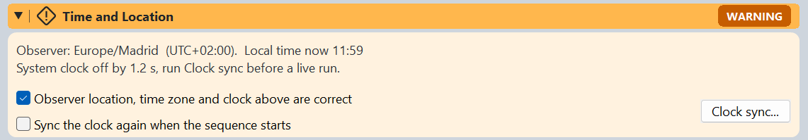
The Time and Location badge checks the PC clock against network UTC when online and warns when the
measured offset should be corrected before a live run. Select the sequence start checkbox if the run may begin
some time after you clear preflight.
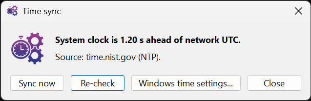
Sync now corrects the PC clock from network UTC and
Re-check measures it again. If automatic synchronization is unavailable, use
Windows time settings... to open Windows Date and time settings and correct the clock
or time zone manually.
Focusing & Guiding
Focusing
Confirm focus or, if you use automatic refocus, verify that SharpCap has a successful saved solar focus
scan from the physical rig. Run autofocus asks SharpCap to repeat that saved scan; it
cannot configure the first scan. Buttons: Recheck focuser,
Run autofocus, or Do not auto refocus before totality to opt
out. With automatic refocus selected, the badge stays red until both focus is confirmed and
Recheck focuser verifies the live focuser connection and solar-compatible saved scan.
In shared-camera mode it also uses a stable HelioMaker solar detection to verify that SharpCap's saved focusing
region contains the complete solar disk. See Focusing.
Guiding
If you use a separate guide scope and guide camera, focus the guide camera too; focusing the main imaging
camera does not focus the separate guiding optical path. The badge shows guiding status and, if your plan
would guide through the unfiltered phases, a red warning about both filters with a risk acceptance checkbox
that gates a clean arm. See Safety.
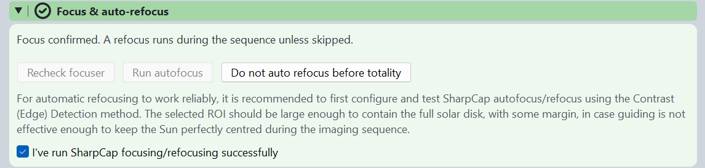
Focus confirmation and the focuser readiness test are separate gates. Run autofocus asks SharpCap
to repeat its prepared scan after the intended rig has been verified.
Mount calibration
Focal length
The effective focal length of the optical path used for guiding. HelioMaker uses it to calculate the PHD2
calibration step size, so it must be correct before calibration.
Polar alignment
Confirms that the mount is polar aligned. Guiding can correct small tracking errors, but it cannot replace
sound polar alignment.
PHD2 calibration
Reviews the current PHD2 calibration and its orthogonality error. A missing or failed calibration is a red
preflight item: PHD2 cannot apply the corrections needed to return the Sun to its locked position until a
successful calibration is available. Run Calibrate PHD2, preferably from the
HelioMaker main screen, then review the new result.
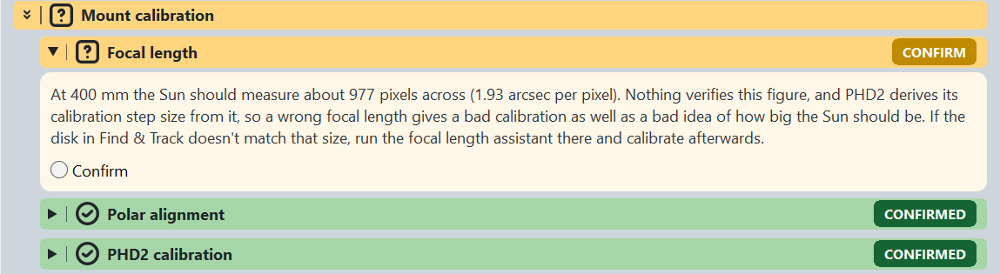
Confirm the focal length used to estimate the Sun's detector size and calculate the PHD2 calibration
step. Then verify polar alignment and PHD2 calibration.
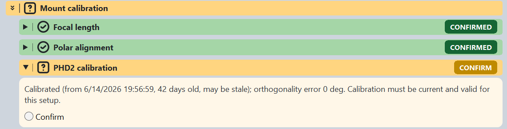
The badge reports when the current PHD2 calibration was made and its orthogonality error. Even a
geometrically good calibration may be stale or no longer valid for the current physical setup, so confirm it
only after checking that the gear has not changed.
Read the calibration result before accepting it
A poor or failed calibration may indicate that polar alignment needs improvement. A large orthogonality
error is an important clue, although mount mechanics, balance and backlash can also contribute.
Too many or too few calibration sample points (dots) can indicate that the effective focal length is
incorrect, because HelioMaker derives the PHD2 calibration step size from that value.
Check or enter the correct focal length on the HelioMaker main screen (HelioMaker Help:
Main Screen ▸ Focal Length). You can measure it with the
Focal length assistant in Find & Track (HelioMaker Help:
Find & Track ▸ Focal Length Assistant), or calculate it with the main screen's
Focal length calculator. Then run PHD2 calibration again.
If a calibration warning remains unresolved, expect reduced guiding accuracy or guiding that cannot correct
the Sun's position reliably. For more diagnostic guidance, see HelioMaker Help:
PHD2 Calibration and Troubleshooting ▸ Understanding the PHD2 Calibration Graph.
Sun framing and tracking
Sun altitude
Confirms that the Sun is above the observing horizon. For a simulation with the Sun below the horizon, a
checkbox lets you proceed anyway.
Mount tracking
Confirms that the mount is tracking the Sun. The controls in this group can start solar tracking.
Sun framing
Asks you to confirm that the Sun is centred in the frame.
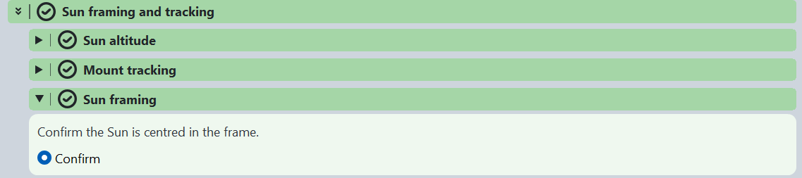
Confirm that the Sun is above the horizon, the mount is tracking and the Sun is centred in the
camera frame.
Exposure, storage & latency
Exposure plan · Totality slot
A check on the exposure plan and whether the central phase cycles fit their time slot.
Camera exposure and gain
Checks the plan's base exposure and gain against the filtered Sun; a
Measure exposure button runs the verification. It does not automatically choose new
planning values. If the disk is not bright and detailed without clipping, adjust the physical camera, record
the pair that works, return to Plan preferences..., enter it as the full solar disk
exposure and gain, derive and review the phases again, and save the revised plan as final before starting.
Camera latency
Warns if the intervals for each phase are faster than the camera was measured to sustain, or if the
measurement no longer matches the plan's frame size. Fix via the System benchmark
test.
Capture folder · Disk space
Where frames are written (Choose folder...) and whether there's enough free space for
the estimated capture. HelioMaker preserves a non-empty folder from an earlier or interrupted Live session
and automatically selects a fresh numbered sibling for the restart, such as
..._live.2. This keeps the previous images, run log and timing record intact while avoiding
SharpCap filename collisions.
Calibration frames
A reminder/check for your darks/flats if you use them.
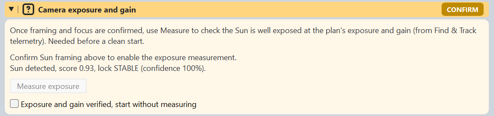
The exposure check becomes available after Sun framing is confirmed. Use it to verify the planned
reference exposure and gain against the filtered Sun, not to choose or rewrite those planning values.
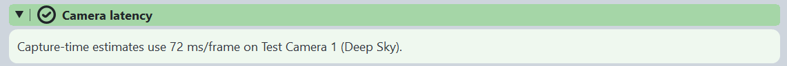
A valid camera latency measurement lets HelioMaker include the measured time per frame in its
capture estimates.
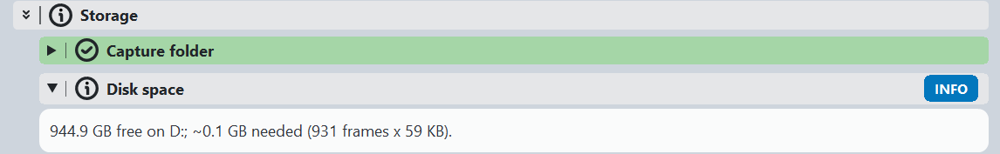
Check both the capture folder and the estimated free space. The estimate shown here is based on the
planned frame count and measured frame size.
This is the final verification, not the first measurement
The exposure, gain and filter ND rating should already have been determined with the physical rig, applied to
the plan and rehearsed. Once you select Start, the current version locks exposure and
gain for the run. A last minute change in SharpCap alone does not update the planned phase recipes.
Power and wake
Power · System wake
Battery level, estimated runtime, and confirmation that Windows will not sleep during the run.
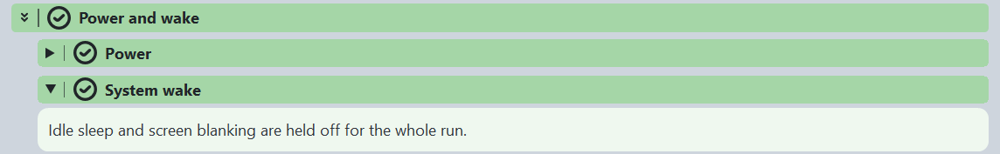
Power and wake checks the available power and confirms that idle sleep and screen blanking will be
held off throughout the run.
Arming and overriding warnings
When the checklist is clear, Start arms the run and opens the
run console. Cancel backs out.
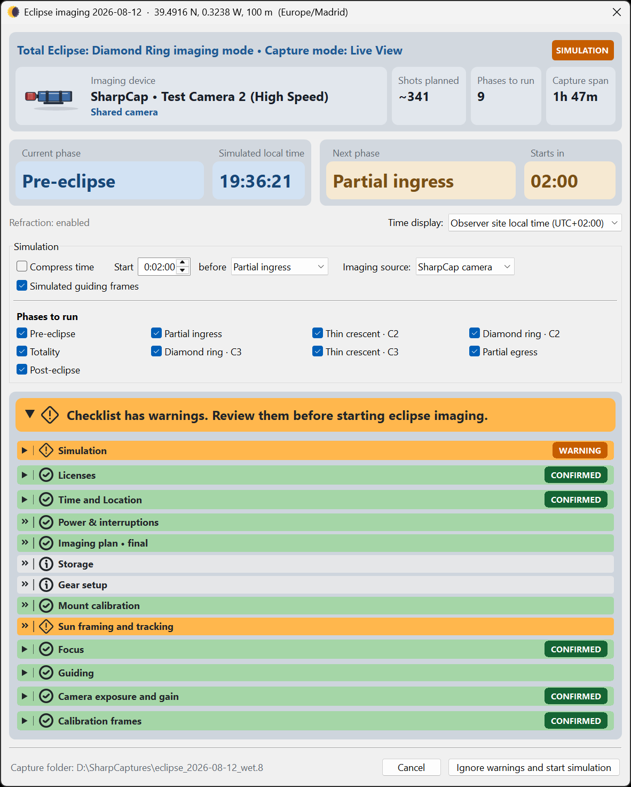
In a rehearsal, the Simulation warning identifies the type of run and remains visible even when all
readiness checks are clear. In this state, use Start simulation.
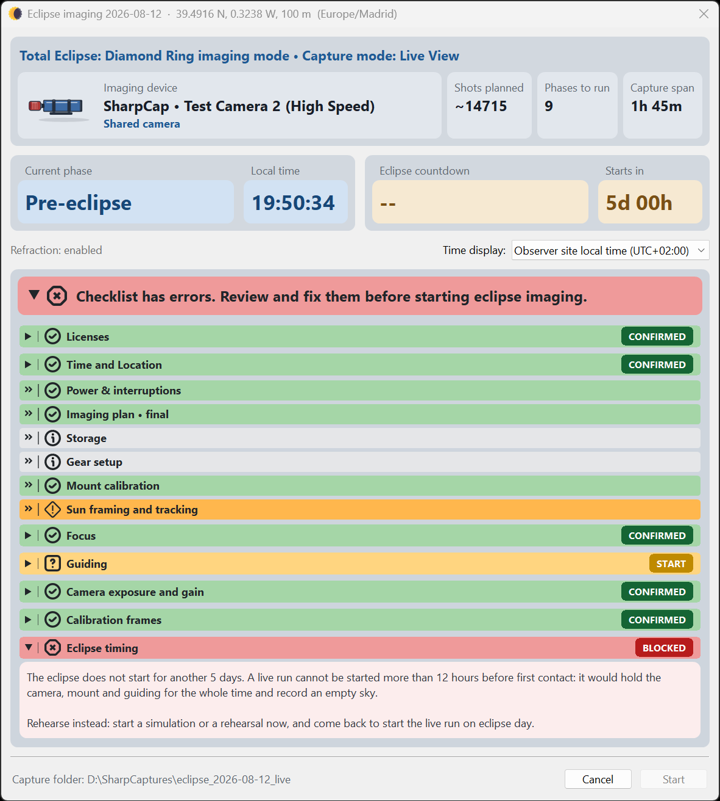
If another warning remains, the banner identifies the item to resolve and the button changes to
Ignore warnings and start simulation. The focus warning shown here is separate from the
expected Simulation warning.
Overriding warnings is your risk
If items are still red, the button becomes Ignore warnings and start. This action
overrides unresolved checklist warnings and raises one confirmation. It exists for the moment when a badge is
wrong and totality is seconds away, not as a way to skip preparation. If you override the focus confirmation,
automatic refocus will not run (the console says so). Use it knowingly.